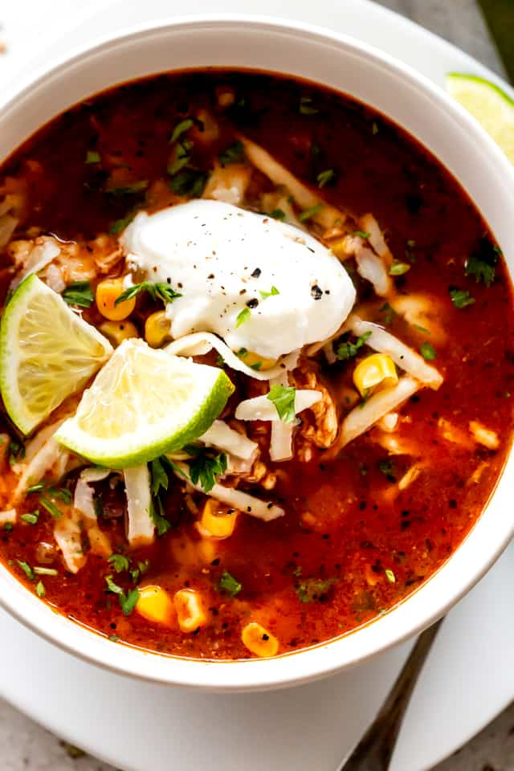

Chicken Enchilada Slow Cooker Soup

Summary
Make chicken enchilada soup in your crockpot for a tasty, hot meal! We like to top each bowl with crushed corn tortilla chips, shredded cheese, or chopped green onions - and sometimes all three.
Ingredients
- 1 pound skinless, bonless chicken breast halves
- 1 (15.25 once) can whole kernel corn, drained
- 1 (14.5 ounce) can diced tomatoes, undrained
- 1 (14.5 ounce) can chicken broth
- 1 (10 ounce) can enchilada sauce
- 1 white onion, chopped
- 1 (4 ounce) can diced green chiles
- 1/4 cup chopped fresh cilantro
- 3 cloves garlic, minced
- 2 bay leaves
- 1 teaspoon ground cumin
- 1 teaspoon chili powder
- 1 teaspoon salt
- 1/4 teaspoon ground black pepper, or to taste
Instructions
- Rinse chicken breasts and pat dry. Place chicken into the bottom of a slow cooker. Add corn, tomatoes, chicken broth, enchilada sauce, onion, green chiles, cilantro, garlic bay leaves, cumin, chili powder, salt, and pepper. Cover and cook on low for 6 hours.
- Transfer chicken to a large play, then shred meat with two forks. Return shredded chicken to the slow cooker, stire to combine, and continue cooking for 30 to 60 more minutes. Discard bay leaves before serving.